If you are sometimes slow updating your lab modules, like me, you may have noticed that when you ran Connect-MgGraph to do your Intune magic, you didn’t get a browser prompt for that interactive login. That’s because WAM in the Microsoft Graph SDK is now doing the heavy lifting on Windows. What is this sourcery?
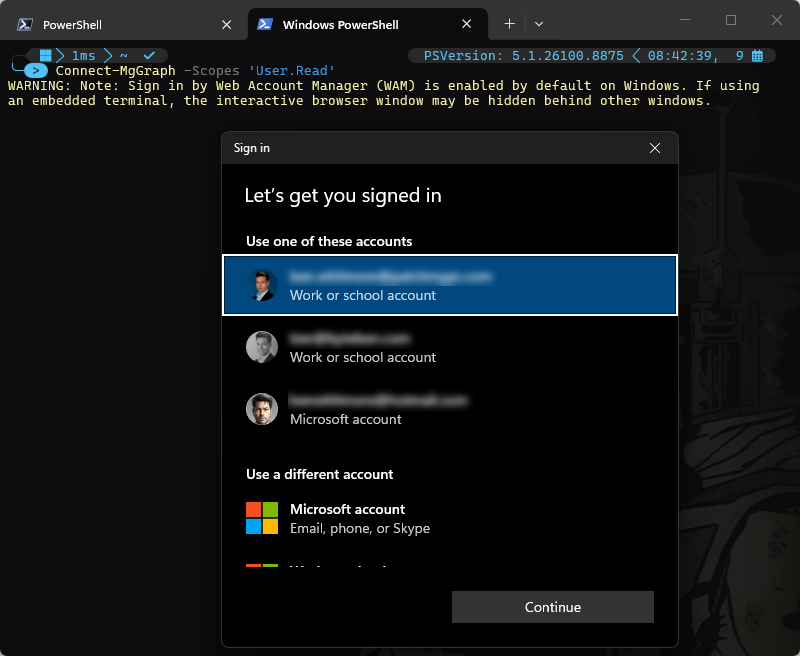
That’s the Windows account picker! The change comes from WAM in the Microsoft Graph SDK, which became the default interactive authentication path on Windows in version 2.34.0.
Nothing changed in your script. Nothing changed in Graph. Nothing changed in Intune. What changed is the Microsoft Graph PowerShell SDK, on 20 December 2025, in version 2.34.0. (Please don’t berate me for bad module housekeeping, im super aware I was 8 months out of date here).
The thing now doing the work is WAM. It isn’t new, Windows has had it for years. What’s new is the SDK using it by default.
What is WAM?
The Web Account Manager is a component in Windows that acts as an authentication broker. The relevance here, with the Graph SDK, is that it benefits users with accounts known to Windows, such as the one already signed into the active Windows session.
So instead of your script spawning a browser, sending you to login.microsoftonline.com and catching the redirect, the token request goes to a Windows component that already knows who’s signed in.
Note: WAM is not a replacement for delegated authentication. This is still delegated access, still a user context. Only the mechanism for getting the token changed.
It’s worth being clear before we dive in, that this only affects interactive, delegated, sign-in. If your scripts authenticate with a certificate, a client secret out of Key Vault, or a managed identity, none of this applies and you can stop reading (no pressure). WAM is a mechanism for signing a user in.
Another thing to note before we move on, it’s not only the Graph SDK PowerShell module that benefits from the Windows WAM. Az.Accounts and ExchangeOnlineManagement PowerShell modules have benefited from this for a couple of years now.
The prompt’s dont render the same way, which is worth pointing out. The one we see here for Connect-AzAccount (similar to the Connect-MgGraph) looks to be the native Windows broker UI.
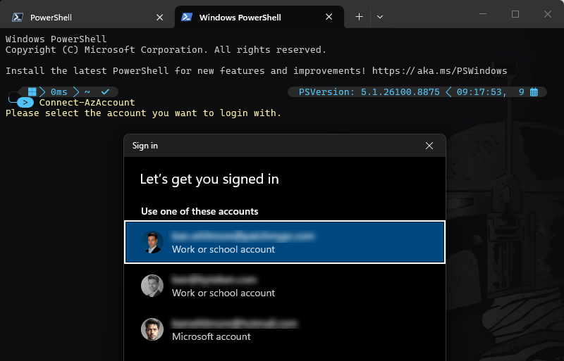
Connect-ExchangeOnline shows a white “Pick an account” card with the Microsoft logo instead. That’s the MSAL account picker, surfacing the same WAM known accounts through the web identity styling rather than the OS shell.
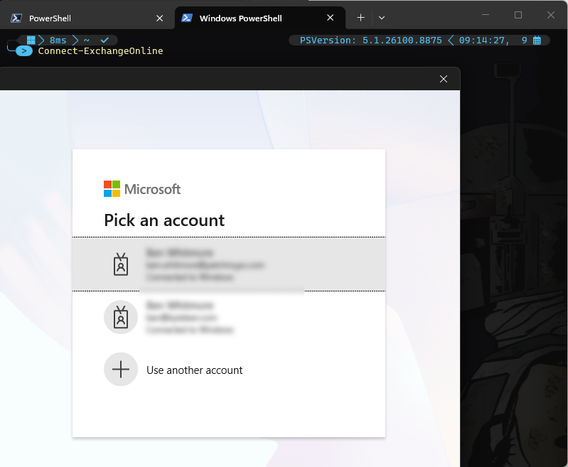
What Changed in the Microsoft Graph SDK?
The release notes are quite clear for version 2.34.0 of the SDK released in December 2025:
The Graph Powershell SDK now enables WAM by default on Windows systems. This setting cannot be disabled, any options providing functionality to disable it are now deprecated.
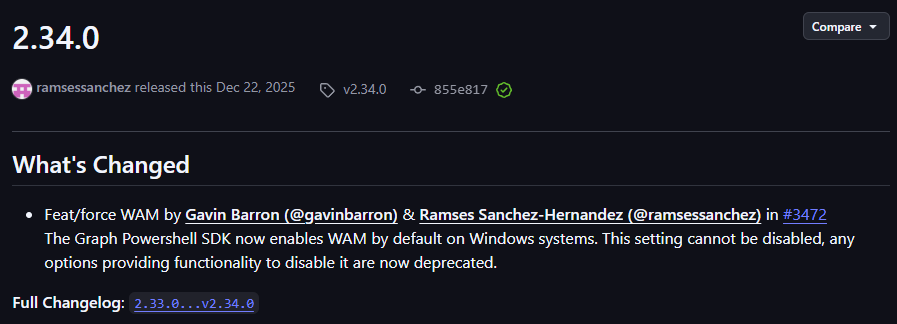
Well, nice Christmas present Microsoft, thank you. What was noteable was the inability to disable the WAM option, like you could in the Az.Accounts and ExchangeOnlineManagement PowerShell modules. That siad, the ability to disable WAM came a little later. Here is a mini timeline:
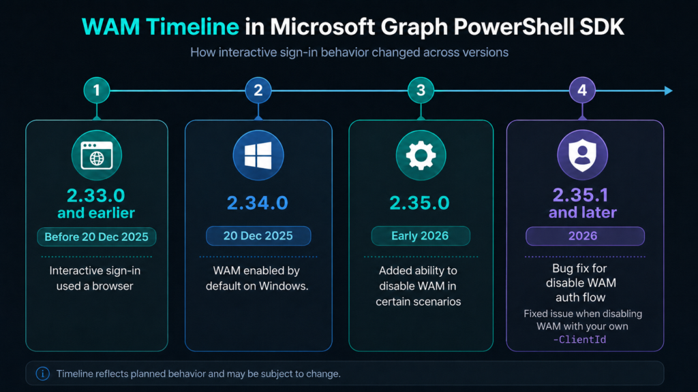
On by Default
Version 2.34.0 was the awkward initial release that may have caught you out. On Windows, WAM was now the default for interactive auth and there was no supported way to turn it off.
You might spot this option and think otherwise:
Set-MgGraphOption -DisableLoginByWAM $true
The problem is that, when using the SDK’s default Microsoft Graph Command Line Tools application, setting it doesn’t actually disable WAM.
The SDK’s own authentication documentation tells you that:
Signin by Web Account Manager (WAM) is enabled by default on Windows and cannot be disabled. Setting this option to $False will have no effect on Windows systems. Except if you use your own app.
So you can do this:
Set-MgGraphOption -DisableLoginByWAM $true Get-MgGraphOption
and happily see the option configured. Then do this:
Connect-MgGraph -Scopes 'User.Read'
and still get WAM.
That’s expected behaviour with the default Graph SDK application, not the setting being ignored. The setting is only honored when you auth with your own app registration.
That capability arrived in 2.35.0. With a custom -ClientId, the SDK could finally honour DisableLoginByWAM and fall back to browser-based interactive authentication.
And that’s why, if you need browser authentication rather than WAM, you will need Graph SDK 2.35.1 or later + your own app registration.
When You Still Need the Browser
For many admins running interactive scripts from their favorite PC, WAM is probably an improvement. Pick an account Windows already knows about, authenticate, no need to close that orphaned redirect tab in your browser, get on with your day.
The problems start when the Windows session you’re using isn’t a good representation of the identity you actually want to use with Graph. That comes up in a few, fairly typical, admin scenarios. Here are 2
Privileged Access Workstations and Jump Boxes
A PAW or jump box is a good example.
You might be signed into Windows with one account but deliberately use a different privileged identity for Intune administration.
With the old browser flow, that was straightforward. The browser opened and you chose or entered the account you wanted.
WAM changes that relationship because authentication is now being brokered by Windows and starts with the accounts known to that Windows session. On shared, privileged or tightly controlled admin workstations, that can be exactly what you don’t want.
VS Code and Embedded Terminals
VS Code is slightly different because authentication can work perfectly well, but the WAM dialog can appear behind the application. Can you spot it?
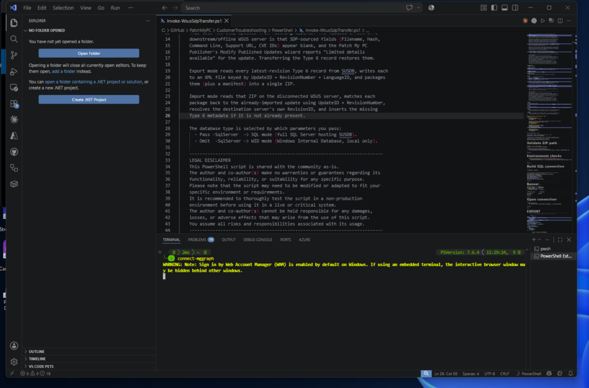
From the terminal it looks like Connect-MgGraph has just stopped.
It hasn’t. Windows is patiently waiting for you to find the authentication window hiding behind everything else. The newer SDK warning even calls this out.
Check What You’re Actually Running
Before troubleshooting WAM, check which Graph SDK you’re actually running.
Depending on the terminal, application and PowerShell host you’re using, you can have multiple versions of the Graph SDK installed on the same machine. Windows PowerShell 5.1, PowerShell 7, VS Code and applications hosting PowerShell may not all be loading modules from the same place.
So don’t assume that because you updated Microsoft.Graph in one PowerShell session, everything else you launch is now using that version.
{kind=link}
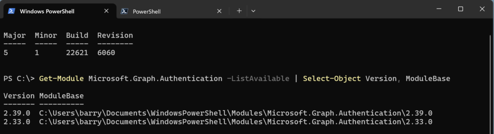
{kind=link}
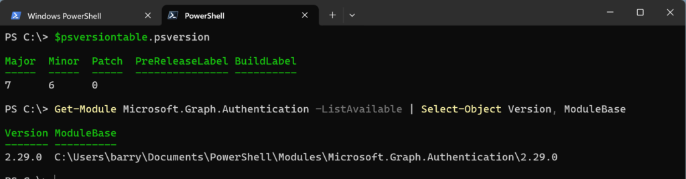
A quick sanity check:
(Get-Command Connect-MgGraph).Version
{kind=link}
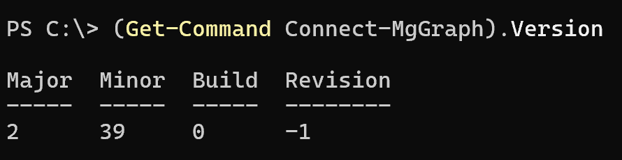
Can You Tell if WAM Was Used?
Did Connect-MgGraph actually leverage WAM? Thats quite easy to test.
Get-MgContext | Format-List *
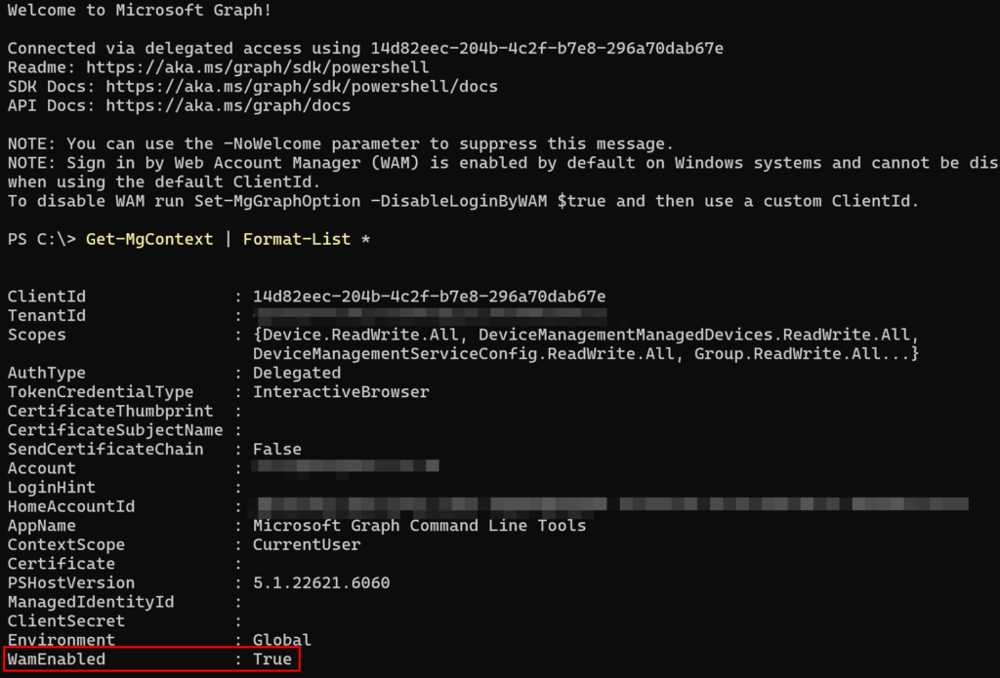
On a WAM-backed interactive connection, you’ll see something like:
ClientId : 14d82eec-204b-4c2f-b7e8-296a70dab67e AuthType : Delegated TokenCredentialType : InteractiveBrowser AppName : Microsoft Graph Command Line Tools WamEnabled : True
One slightly confusing detail that you shouldn’t let trip you up:
TokenCredentialType : InteractiveBrowser
That does not mean the old browser flow was used.
Default Graph Client
The context also exposes another useful detail:
With the normal:
Connect-MgGraph -Scopes 'User.Read'
you’ll see:
14d82eec-204b-4c2f-b7e8-296a70dab67e
and:
AppName : Microsoft Graph Command Line Tools
That’s the default Microsoft application that’s used for the Graph PowerShell SDK we’ve been talking about.
{kind=link}
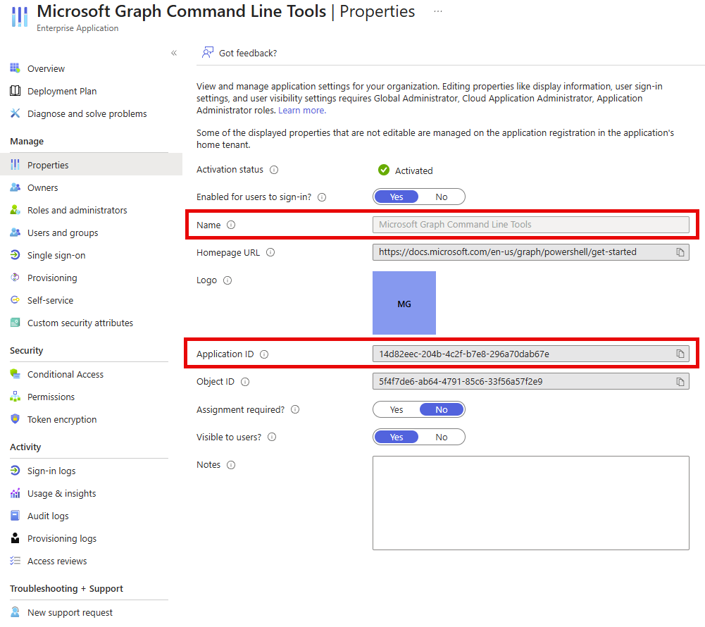
So this gives us a useful snapshot:
Get-MgContext | Select-Object AppName, ClientId, AuthType, TokenCredentialType, WamEnabled
With the default client on Windows:
AppName : Microsoft Graph Command Line Tools ClientId : 14d82eec-204b-4c2f-b7e8-296a70dab67e AuthType : Delegated TokenCredentialType : InteractiveBrowser WamEnabled : True
And importantly, as we saw earlier, the SDK itself tells us on connection that WAM cannot be disabled while using that default ClientId.
Switching WAM Off
After understanding how the Windows WAM is now leveraged in the Graph SDK, you may want to actually disable it. Cool, we can do that with the Set-MgGraphOption -DisableLoginByWAM $true command.
Even after setting that MgGraph option to disable WAM, if we use the default client:
Set-MgGraphOption -DisableLoginByWAM $true Disconnect-MgGraph Connect-MgGraph -Scopes 'User.Read' -NoWelcome Get-MgContext | Select-Object AppName, ClientId, TokenCredentialType, WamEnabled
WAM remains in play because we’re still using Microsoft’s default application. Go test it for yourself. To actually take the browser path for auth, we need our own application registration and Graph Authentication 2.35.1 or later:
Set-MgGraphOption -DisableLoginByWAM $true Disconnect-MgGraph $clientId = '<client-id>' $tenantId = '<tenant-id>' Connect-MgGraph -ClientId $clientId -tenantId $tenantId -Scopes 'User.Read' -NoWelcome
Then check the context again:
Get-MgContext | Select-Object AppName, ClientId, TokenCredentialType, WamEnabled
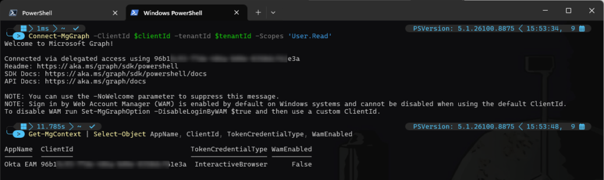
Redirect URI’s
If you’re using your own app registration, the redirect URI needs to support the authentication method you’re using.
For browser-based interactive authentication, add:
under Authentication > Mobile and desktop applications. If you also want the same app registration to support WAM, add the broker redirect URI:
ms-appx-web://Microsoft.AAD.BrokerPlugin/<your-client-id>
Without that broker redirect, WAM will fail with AADSTS50011 because the redirect URI used by WAM isn’t registered against your app.
{kind=link}
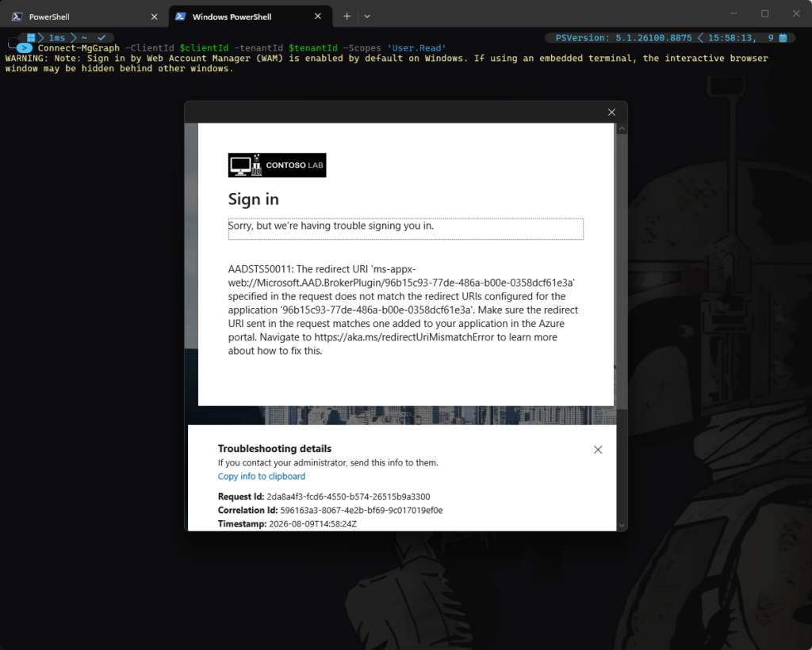
Once both redirect URIs are configured, the same custom app registration can support either authentication path:
http://localhost ms-appx-web://Microsoft.AAD.BrokerPlugin/<your-client-id>
{kind=link}
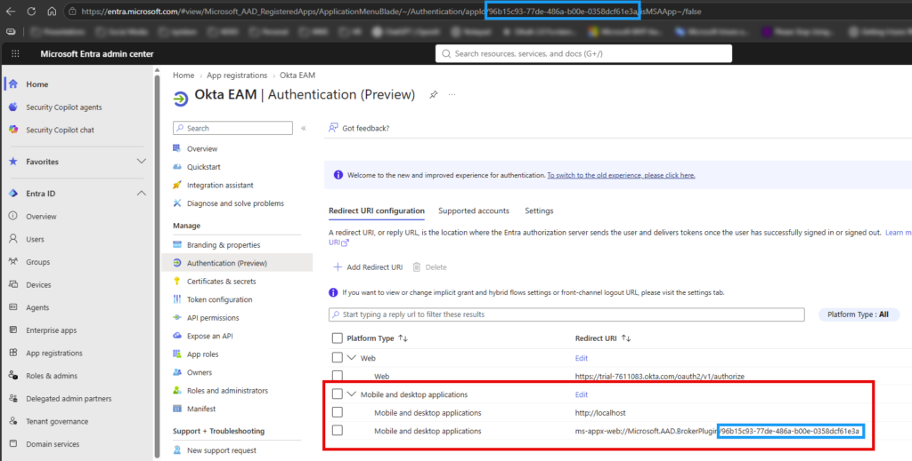
The first supports the standard interactive browser flow. The second supports WAM.
Summary
WAM itself isn’t new, and neither is delegated authentication. What changed is the route Connect-MgGraph now takes to interactively authenticate a user on Windows.
For most interactive use cases, I actually quite like it. Windows already knows about my accounts, the account picker is quick, and I don’t end up with another pointless authentication tab left open in my browser.
The interesting part is what happens when that Windows context isn’t the context you want to use. PAWs, jump boxes, embedded terminals and other admin scenarios can make the independence of a browser-based login useful.
From Graph SDK 2.34.0, WAM became the default on Windows. If you’re happy with that, there’s nothing you need to change. If you’re using delegated auth with the default Microsoft Graph Command Line Tools app and you’re still getting the old browser flow, check your Graph SDK version.
If you’re not, use Graph Authentication 2.35.1 or later, bring your own app registration, set DisableLoginByWAM, and make sure the app has the correct redirect URI for the authentication path you want.
And if you’re troubleshooting somebody else’s machine, don’t assume the version of Graph you just updated is the version their Connect-MgGraph is actually running.
Check the command. Check the context. Check WamEnabled.
Happy Graphing!